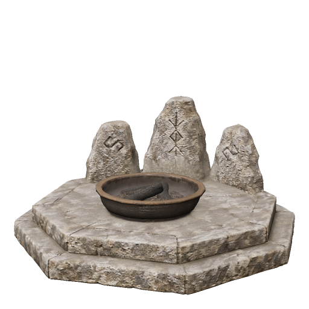
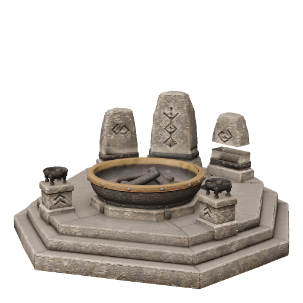
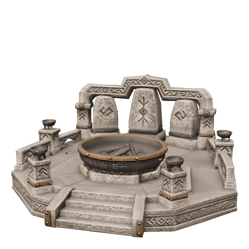
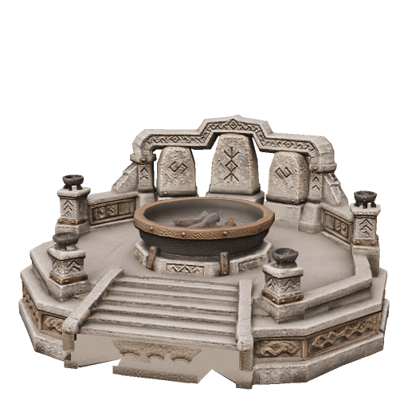
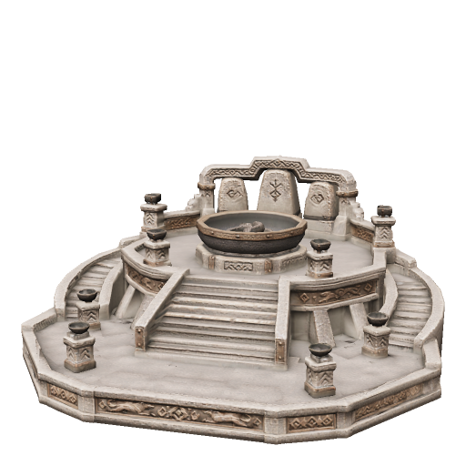
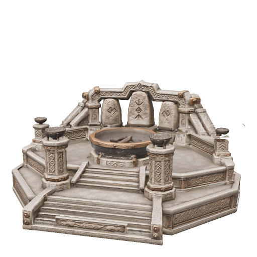
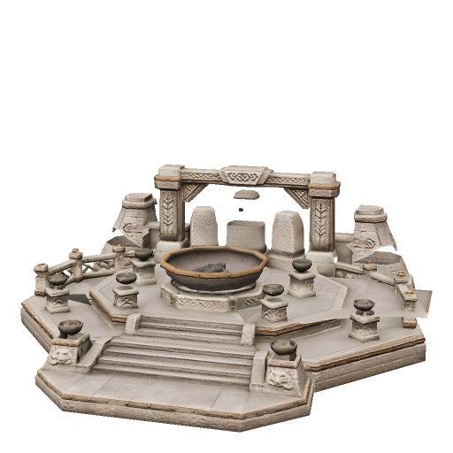
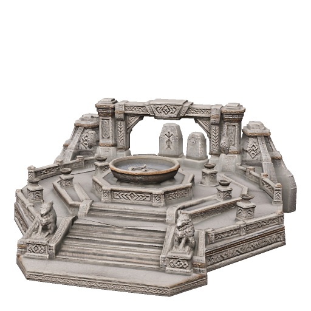

← Oyuna dönKutsal Ocak: dokuz görünüm
Önizlemeler Tripo'nun gerçek üretim çıktılarıdır. Oyundaki kopyalar yerelde optimize edildi; gerekli küçük taş birleşimi onarımları ve hareketli ateş efektleri ek kredi tüketmedi.
Doğrulanmış kalan API bakiyesi: 550 kredi. Bekleyen kredi yok.
Bu devam çalışması: 400 / 400 kredi. Önceki Sv1: 50 kredi. İlk model dahil toplam: 450 kredi.

Kutsal Ocak · Sv 1
Kutsal Ocak · Sv 5 Kutsal Ocak · Sv 10
Kutsal Ocak · Sv 10
Kutsal Ocak · Sv 15
Kutsal Ocak · Sv 20
Kutsal Ocak · Sv 25
Kutsal Ocak · Sv 30
Kutsal Ocak · Sv 35
Kutsal Ocak · Sv 40İşlem dökümü
| Seviye | API kredisi | Görev kimliği (image-to-model) | Oyun dosyası | Üçgen |
|---|
| Sv 1 | 50 | c7294c07-88ff-4d38-a1cc-ec2f762de581 | 1.02 MB | 11,651 |
| Sv 5 | 50 | e4e41e9a-3c42-4618-9c29-a282922947f8 | 0.95 MB | 11,811 |
| Sv 10 | 50 | 3e7bd248-a003-4e06-ac70-7598825f4365 | 0.96 MB | 11,936 |
| Sv 15 | 50 | ecdaab13-073c-4aa3-b1c2-073457e71980 | 1.04 MB | 11,456 |
| Sv 20 | 50 | 20881f53-b037-4fab-93e5-3f52d6fcb596 | 1.09 MB | 11,831 |
| Sv 25 | 50 | 43e1ecac-d9e5-49c7-9e4a-37c8ef85a0ea | 0.99 MB | 11,800 |
| Sv 30 | 50 | 3e371cd2-89b6-40aa-be14-0a1cd78dff94 | 2.14 MB | 11,976 |
| Sv 35 | 50 | 4f6bc417-d362-44bc-8a5a-a22de49c7682 | 1.88 MB | 11,835 |
| Sv 40 | 50 | 10aa60f4-a2f2-47da-8d31-83dda162095c | 2.00 MB | 11,658 |
Model: Tripo v3.1 (v3.1-20260211), smart_low_poly ve detaylı PBR doku. Büyük orijinal GLB dosyaları korunur; oyunda hafifletilmiş kopyalar yüklenir. Tripo yeniden üretimi, rig, animasyon veya ücretli format dönüşümü eklenmedi.